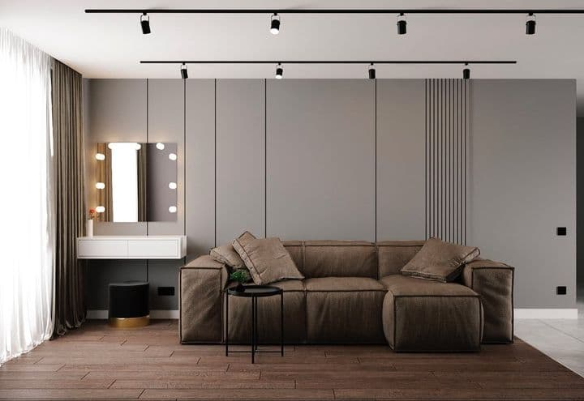
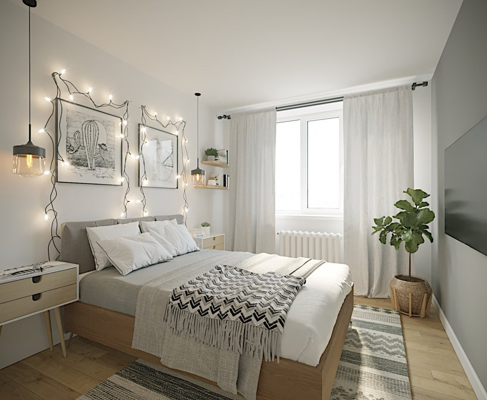

| Візуалізація | Деталі проєкту | Опис концепції |
|---|---|---|
|  | Проєкт "Light & Wood" | Використання натуральних матеріалів для створення затишку у вітальні. |
 |
Переглянути повний кейс на Behance | Кухня у стилі мінімалізм з акцентом на світловий дизайн. |
|  | Проєкт "Scandi Night" |
Ця спальня була розроблена для відпочинку. Основна ідея — спокій та простір. Використано пастельні кольори та м'яке освітлення. |